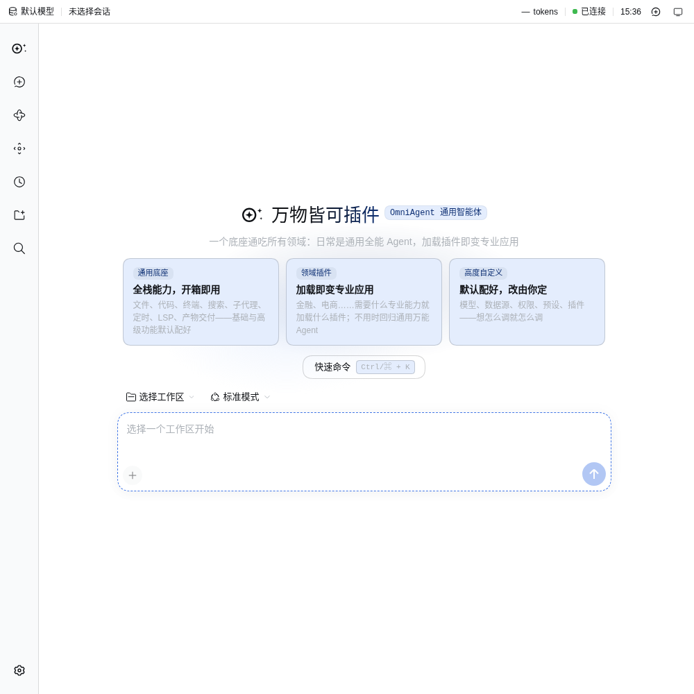
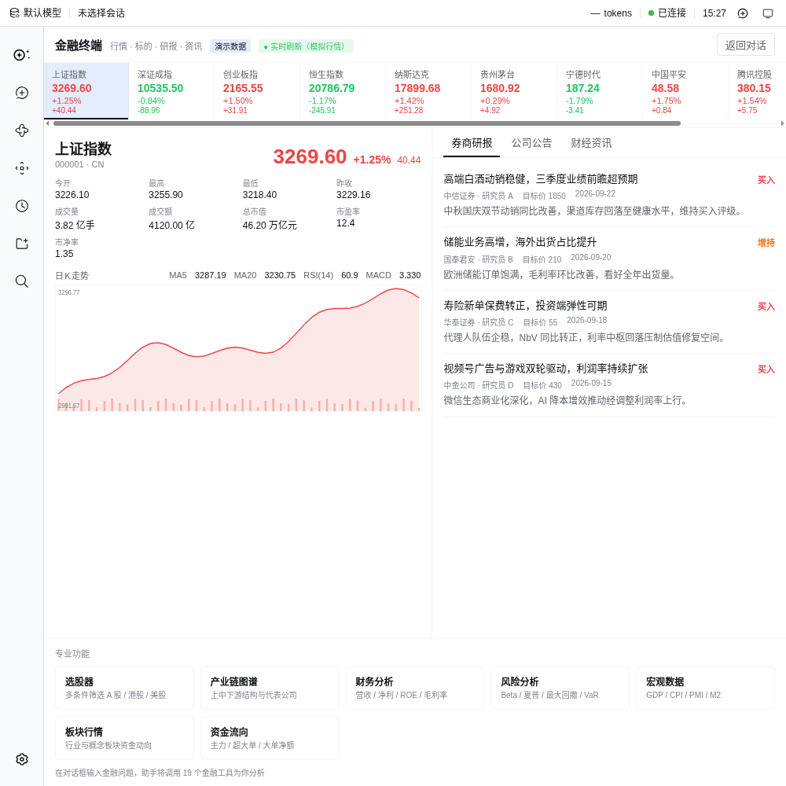
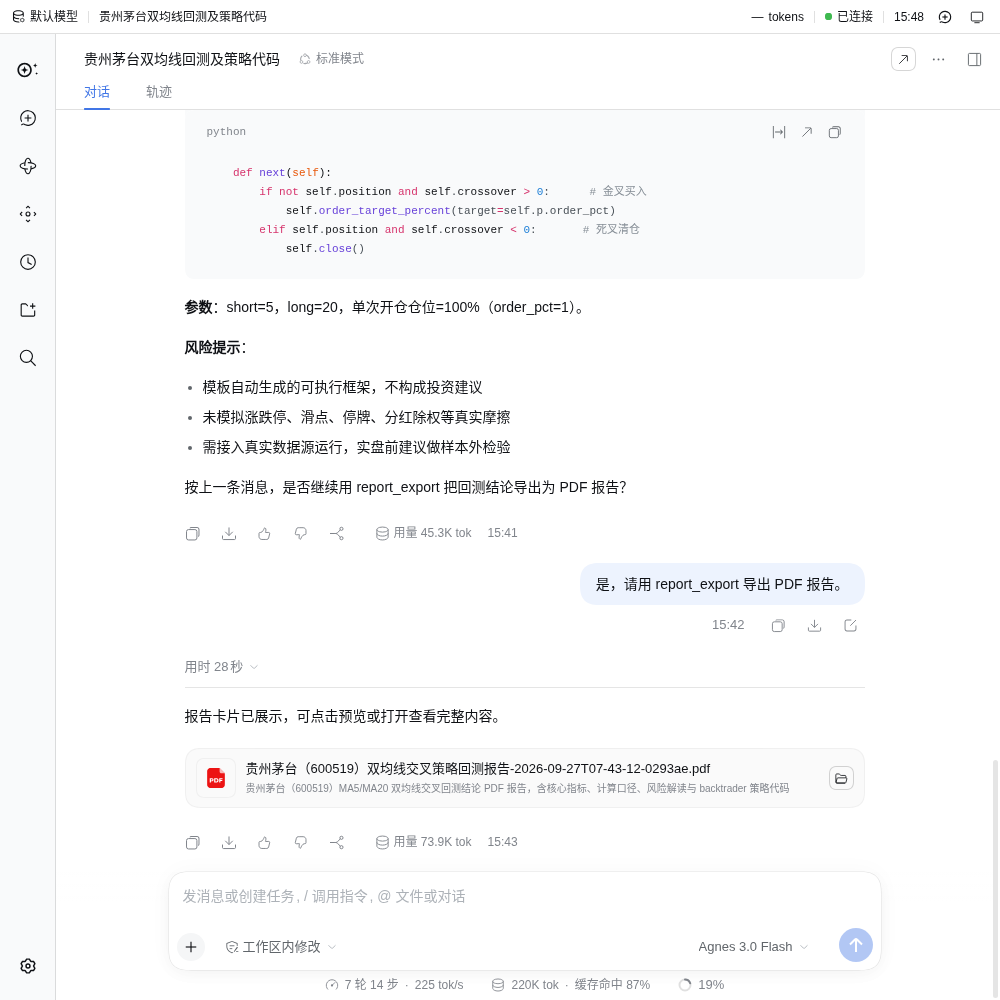
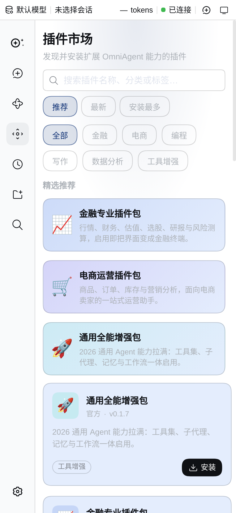
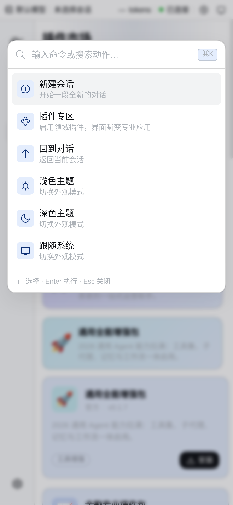
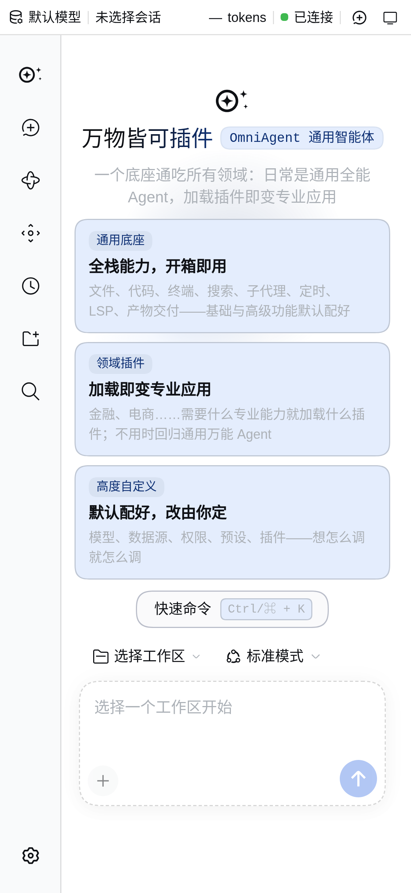

万物皆可插件的
通用智能体
一个底座，N 种职业。不装插件，它是开箱即用的通用全能 Agent； 装上某个插件，同一个 Agent 立刻变成那个垂直领域的专业应用； 卸下插件，立刻回归通用——通用能力永远不被削弱。
为什么是「万物皆可插件」
垂直领域工具层出不穷，却始终没有统一的解法。OmniAgent 把「通用底座」与「专业知识与工具」分离——底座负责思考与执行，插件负责专业与界面。
通用全能 Agent
对话、搜索、写代码、操作文件、管理任务、长期记忆——日常能力全部内置并默认配好，开箱即用。
base · 永远在线加载即变专业应用
专业知识、专业工具、专业界面打包成插件。装上 dsh-finance，界面瞬间变成金融终端：行情、K 线、研报、回测一应俱全。
install · 界面瞬变回归通用，能力不损
卸下插件，回到通用底座。专业能力随插件来去，通用能力永远完整——一个底座通吃所有领域。
uninstall · 来去自如产品实拍
同一个 Agent，两种形态。左：通用底座（Web 界面）。右：加载金融插件后的专业终端。






能力清单
2026 年主流 Agent 该有的，这里全有——并且全部默认配置好，随时可自定义、可停用。
模型中立
Agnes / DeepSeek / OpenAI 兼容端点，随时切换，不绑定任何厂商。
确定性可复核回测
双均线/定投策略引擎，每个数字可独立复算，报告附公式口径。
长期记忆与知识库
SQLite 持久化 + BM25 全文 + 向量混合召回，落盘重开可读。
细粒度权限规则
allow / auto / ask / deny 四档 + 通配符，工具级精细管控。
多智能体 DAG 编排
研究员 → 分析师按依赖并行/串行编排，上游输出注入下游，消息可追溯。
报告导出
Markdown / HTML / 真 PDF（含图表与图片），可搜索中文、可交付。
后台任务队列
长任务异步执行，进度上报、可取消、可查询。
插件市场与模板
官方领域包 + 社区插件目录，最小插件模板快速起步。
全流程可观测
工具调用、token 统计、会话时间线、状态栏实时可见。
插件生态
领域包把专业知识、专业工具、专业界面一次打包。垂直领域层出不穷，但底座只有一个。
金融智能体
行情、K 线技术指标、券商研报、选股、回测引擎、量化代码生成、PDF 报告。
官方 · 已可用电商智能体
商品运营、营销内容、客户服务等电商垂直能力打包。
官方 · 已可用通用增强包
语言服务、git 工具、系统通知、定时任务、工作区追踪、浏览器与桌面自动化。
官方 · 已可用最小插件模板
四文件起步：注册、服务、客户端、声明。十分钟做出第一个垂直插件。
开发者 · 模板你的领域
法律、医疗、教育、科研……任何专业知识与工具都能打包成插件，跟随插件市场分发。
社区 · 即将上线持续扩充
垂直领域层出不穷，OmniAgent 的答案始终只有一个：变成插件。
路线图快速开始
克隆仓库，配置一个模型端点，即可使用。默认配置开箱即用，可高度自定义。
# 1. 克隆并安装（需要 Node ≥ 22.19 与 pnpm ≥ 11） git clone https://gitcode.com/badhope/OmniAgent.git cd OmniAgent && pnpm install # 2. 配置模型端点（Agnes / DeepSeek / 任何 OpenAI 兼容端点） export AGNES_API_KEY=your_key export AGNES_BASE_URL=https://api.agnes-ai.cn/v1 # 3. 以通用底座启动 node apps/cli/lib/bin.js --profile web --no-open # Web 界面 → http://127.0.0.1:3080 # 4. 加载金融插件，界面瞬变专业终端 node apps/cli/lib/bin.js --profile finance --no-open # 金融终端 → http://127.0.0.1:8631 # 5. 或直接用 CLI node apps/cli/lib/bin.js --profile finance "回测贵州茅台的双均线策略并导出 PDF 报告"